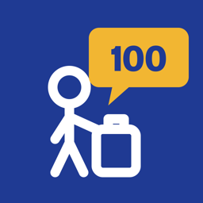

出発まで100フレーズ
出発日から逆算して、旅行で使うスペイン語100フレーズを覚えるアプリ
お問い合わせ
不具合のご報告やご要望は、次のメールアドレスまでお送りください。
fukutomi95863@gmail.com
返信まで数日いただくことがあります。不具合のご報告には、お使いのiPhoneの機種とiOSのバージョンを添えていただけると助かります。
よくある質問
Q. アカウント登録は必要ですか？
不要です。学習記録はiPhoneの中だけに保存されます。
Q. 話しても正しく判定されません。
静かな場所で、iPhoneに少し近づいて話してみてください。うまく判定されない場合は「声を出せない（答えを見て自分で判定）」から、ご自身で判定して進めることもできます。
Q. マイクや音声認識の許可を後から変えたい。
iPhoneの「設定」→「出発まで100」から、マイクと音声認識の許可を変更できます。
Q. 出発日を変更したい。
ホーム画面右上のカレンダーのボタンから変更できます。復習の予定は新しい出発日に合わせて自動で組み直されます。
Q. 機種変更したら学習記録は引き継げますか？
iPhoneのバックアップから復元した場合は引き継がれます。アプリを削除すると学習記録も消えますので、ご注意ください。